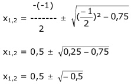

Aufgabe 69
Welche Koordinaten haben der Scheitelpunkt S
und die Nullstellen N der Funktion
2 2 1
y = --- x2 - --- x + ---?
3 3 2
2 2 1 2
y = --- x2 - --- x + --- | :---
3 3 2 3
3 3
--- y = x2 - x + ---
2 4
Quadratische Ergänzung:
3
--- y = x2 - x + 0,25 – 0,25 + 0,75
2
mit x2 - x + 0,25 = (x – 0,5)2
3 2
--- y = (x – 0,5)2 + 0,5 |*---
2 3
2 1
y = --- (x – 0,5)2 + ---
3 3
Dies ist die Scheitelpunktform.
1
S abgelesen: S(0,5|---)
3
Nullstellen: y = 0
2 2 1 2
0 = --- x2 - --- x + --- |:---
3 3 2 3
3
0 = x2 - x + ---
4
p. q – Formel:
p = -1 ; q = 0,75

Der Ausdruck unter der Wurzel ist negativ,
deswegen hat diese Funktion keine Nullstellen.
(Parabel ist nach oben geöffnet, Zahl vor x²
ist positiv, und der Scheitelpunkt liegt
oberhalb der x-Achse.)